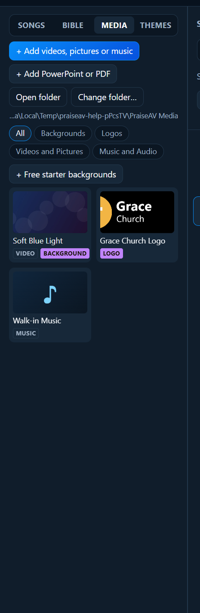
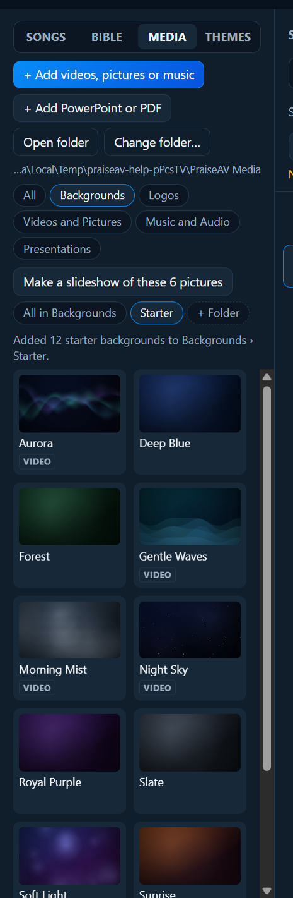
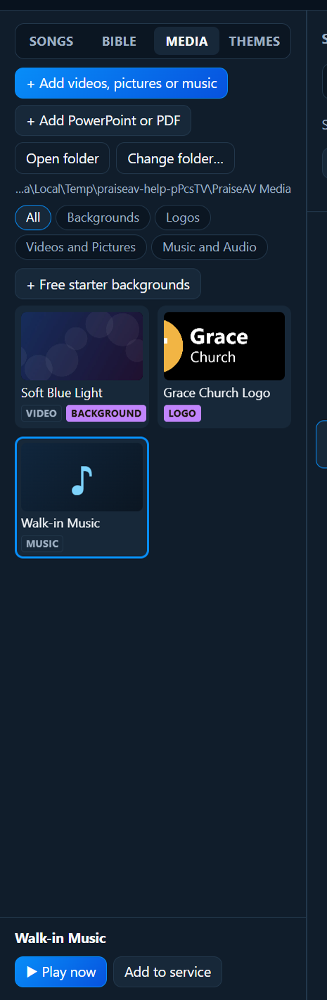
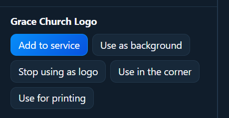

Media and slides
Media: videos, pictures and backgrounds
The Media tab holds your videos, pictures and music: moving backgrounds, your logo, notices, clips.

Free starter backgrounds
No backgrounds yet? Click + Free starter backgrounds (in All or Backgrounds). PraiseAV makes twelve on this computer, in about half a minute, into Backgrounds › Starter:
- six calm moving loops: Soft Light, Gentle Waves, Aurora, Night Sky, Warm Glow and Morning Mist
- six still ones: Deep Blue, Royal Purple, Sunrise, Forest, Slate and Warm Sand
PraiseAV draws them itself, so they’re free to use for anything, with nothing to license. The moving ones loop smoothly, with no jump.

Where the files live
PraiseAV keeps media in one folder: Documents › PraiseAV Media to start with. The path is shown under the buttons. Inside are folders for each kind:
- Backgrounds: what goes behind song words and verses.
- Logos: your church logo.
- Videos and Pictures: clips, notices, photos.
- Music and Audio: walk-in music, backing tracks.
The chips along the top (All, Backgrounds, Logos…) show one folder at a time.
- Open folder opens it in File Explorer.
- Change folder… uses a different folder, for example where your old EasyWorship backgrounds are, or a shared folder.
Adding files
Click + Add videos, pictures or music, or drag files from File Explorer onto the list. They’re copied into the media folder, so they still work after a USB stick is unplugged. Music goes into Music and Audio by itself.
| Kind | Files that work |
|---|---|
| Videos | MP4, M4V, MOV, WEBM, OGV |
| Pictures | JPG, PNG, GIF, WEBP, BMP, SVG |
| Music | MP3, M4A, AAC, WAV, OGG, OPUS, FLAC |
Using a file
Click a file to choose it. Buttons appear underneath:

- Add to service (or double-click the file, or drag it into the service).
- Use as background: shows it behind song words and Bible verses. It gets a Background label.
- Use as logo: shown when you press Logo (L). It gets a Logo label.
- Use in the corner: a different picture for the small logo in the corner of the screen. It gets a Corner logo label.
- Use for printing (pictures): a different picture for printed service sheets. It gets a Print logo label.
- Play over the screen (videos): see below.
- ▶ Play now (music): see Music and audio.
Your church background
A gentle moving background behind the words looks good and is easy to read. Choose one in Backgrounds, then Use as background. Themes can use a different one (see Themes).
Your church logo
Put your logo in Logos, click it, then Use as logo. A PNG with a see-through background looks best. It also appears on printed service sheets and can sit small in a corner of the screen (see Running a service).
A different logo for the corner
A logo with words looks good full screen, but in the small corner the words become hard to read. Many churches use just their symbol there (the cross, the heart, the dove…).
- Make a picture of just the symbol, and add it to Logos.
- Click it, then Use in the corner.

The full logo is still used for Logo (L) and the service sheet. Stop using in the corner puts the full logo back in the corner.
A logo for printing
Logos for screens usually have light words, made to stand out on a dark background. On white paper those words disappear. Many churches have a second version with dark words for paper.
- Add the dark version to Logos.
- Click it, then Use for printing.
Printed service sheets then use it, and the screens keep the light one. Stop using for printing puts the church logo back on the sheets.
Sing along with a worship video
A worship video of a band playing, with no words on it? Put the song’s words over it so everyone can sing along:
- Click the video, then Sing along with a song….
- Type the song’s title (or some words), and click it in the list. The song must be in the Songs tab already.
The song goes into the service with the video as its backing video. When it’s on screen, the video plays behind the words with its sound. Move the words with Next, or record the timing once so they move by themselves.
To show the video on its own, without words, add the video itself to the service instead.
Folders inside folders
In Backgrounds (or any folder), click + Folder to make one inside it, for example Christmas or Easter. Then click it and add files. All in Backgrounds shows them all again.
A slideshow of pictures
Open a folder with several pictures and click Make a slideshow of these pictures. They go into the service as one item that moves on by itself every 8 seconds. See Announcement loops.
See-through videos over the screen
Some videos are made to go on top: confetti, snow, falling leaves, light leaks. Choose one and click Play over the screen. It plays over whatever is showing, and the words stay. Under On screen, tick Loop or click Stop.
These need a video with a see-through background (usually WEBM). Ordinary videos would cover everything.
Videos in the service
A video in the service shows as one slide. Click it to play. See Running a service.
Good background clips
If you’re choosing or buying moving backgrounds:
- 1920 × 1080 (Full HD), MP4 (H.264). 4K looks no better on most projectors and makes the computer work harder.
- Seamless loops of 15 to 60 seconds, so there’s no jump when they go round.
- Slow and calm, dark or soft colours, nothing busy in the middle where the words go.
- Keep them under about 50 MB each.
Free sources include Pixabay and Pexels (search “abstract loop” or “worship background”). Check each site’s licence.